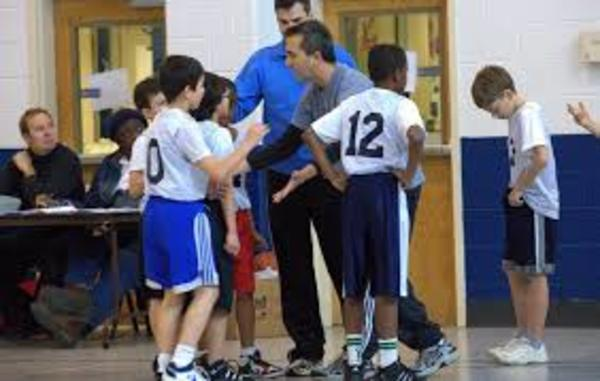
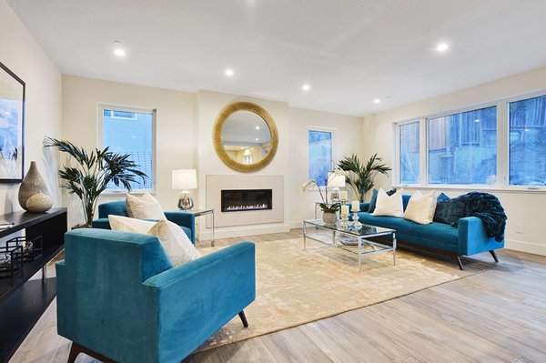
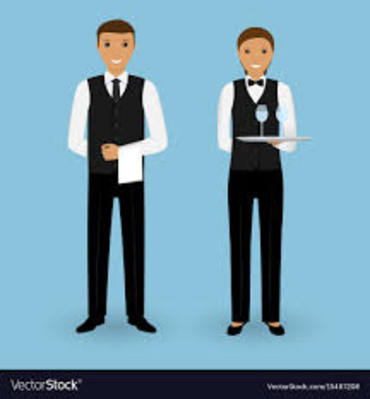
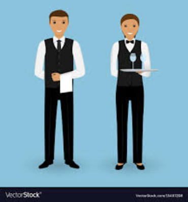
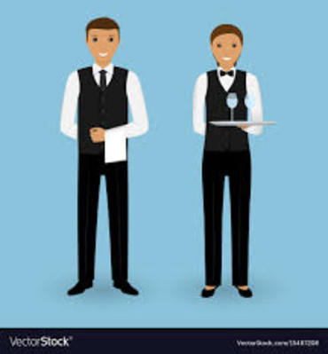

Jordan Chan
Academics:
Business Major
Current full-time student at University of California Riverside
Graduated from Hillsdale High School
Current Position:
I am striving toward getting my degree, then studying to obtain my CPA once I finish college. My goals during school are to maintain at least a 3.5 gpa, get an internship during the summer of my junior or senior year, make connections and network with those in the field of business, and to graduate within four years.
Work Experience:
I have worked as a basketball coach during high school, tasked with coaching 1st graders through a 10 week season with games and practice every Sunday. I was required to create a practice plan that would help develop the children's basketball fundamentals, as well as coach them and have them apply what they had learned in practice during a real game.
After I graduated high school, I had the opportunity to help as a staging assistant over the summer. I assisted in staging houses that were put up for sale on the market, so that they looked appealing to prospective buyers.
About me:
I am from San Mateo, CA, enjoy playing basketball and collecting sneakers, have two siblings along with my parents at home, and my favorite travel destination is Hawaii. Through basketball, I have learned valuable leadership skills that can overlap with my everyday life. I learned how to lead by example, as well as being the one calling the shots. Through my hobby of collecting sneakers, I learned how to look for trends in the market, and what time would be the best to buy and sell the sneakers for the highest profit. I chose the path of business major because of these two hobbies. I became interested in how businesses work and what it takes to run one. Ultimately, it lead to my interest in accounting, since that was one of the classes I was required to take as part of my major.
I am looking for an occupation in the business field, specifically in accounting.
Experience
Staging Assistant
• Arranged furniture in houses for sale
• managed inventory in warehouse
• Experience with assembeling furniture, hanging pictures, handling fragile objects
Basketball Coach
• Responsible for teaching kids basics
• Coached kids through real games
• Created practice plans that developed fundamentals
Kimochi Volunteer
• Packaged food to be sent out to those in need
• Waiter for a fancy dinner for the elderly
• Helped fundraise for a new senior home
• Fed the homeless
Education
UC Riverside
Portfolio


 

